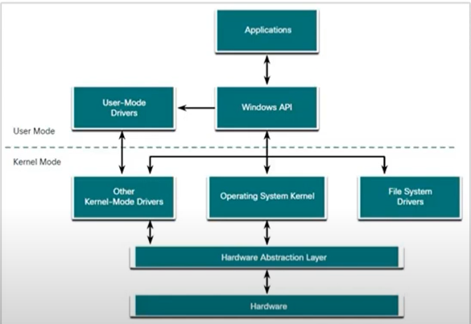

User Mode Kernel Mode

Burada görüldüğü üzere iki farklı mod var User Modeve Kernel Mode
Farkları şudur:- Her modülüm işlem yapma durumu ve işlem yapılması durumunda sanal adresleme kullanıyorlar , bu durumda kernel araında kalan modlar tek bir noktayı kullanıyor bu ne demek burada bir problem çıkarsa tüm sistem down oluyor mesela mavi ekran ama user mode geldiğimizde ise user mode tarafında sanal adresimee taraınfa her bir işlem içn özelliştirlmiş durumda , mesela bazı programlar çalışmıyor ama diğerleri çalışıyor.
- çekirdek tarafına bulunan modüller donanım tarafında ki tüm donanıma direkt erişime sahipler ama user tarafta izinlerle erişebilirler.